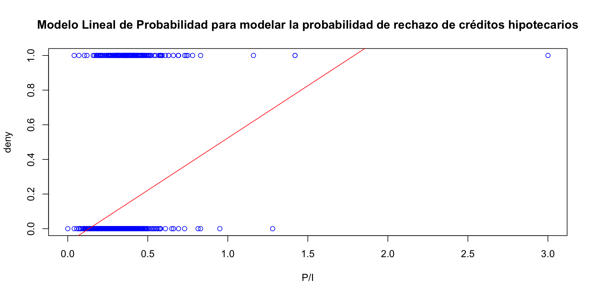
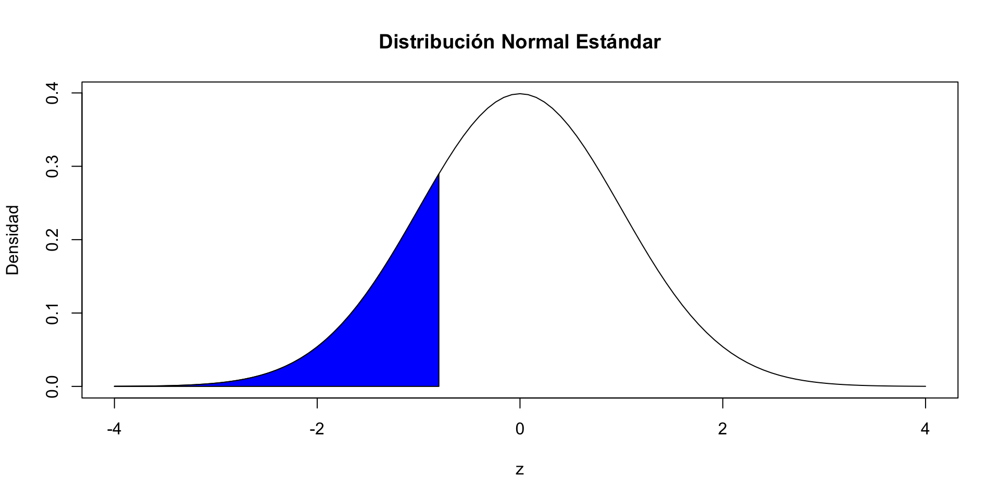
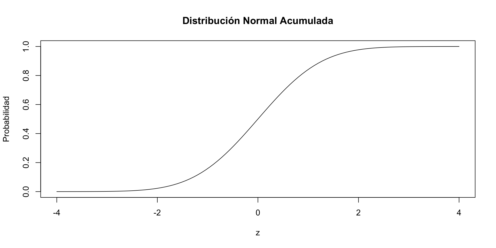
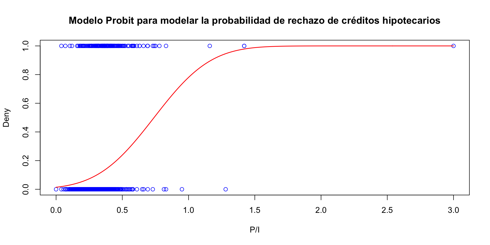
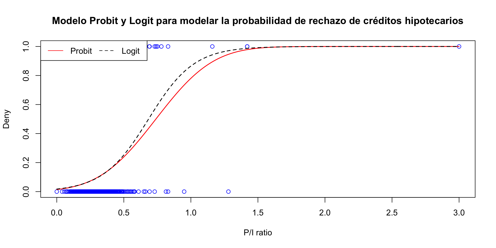
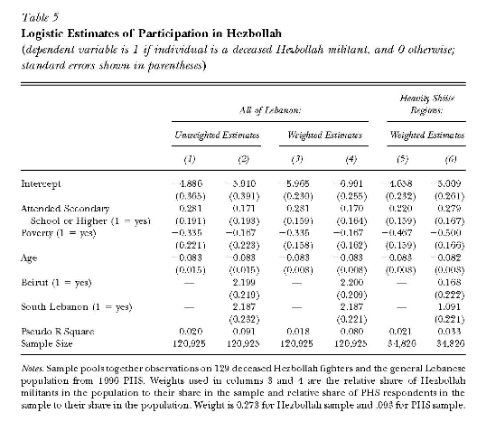

t test of coefficients:
Estimate Std. Error t value Pr(>|t|)
(Intercept) -0.079910 0.031967 -2.4998 0.01249 *
pirat 0.603535 0.098483 6.1283 1.036e-09 ***
---
Signif. codes: 0 '***' 0.001 '**' 0.01 '*' 0.05 '.' 0.1 ' ' 1Econometría II
Unidad 5: Modelos de Variable Dependiente Dicotómica
Mauricio M. Tejada
Departamento de Economía, Universidad Diego Portales
Introducción
Ideas básicas
A menudo nos interesa explicar un resultado cualitativo. Ejemplos:
Queremos estudiar participación laboral o no de mujeres casadas.
Queremos saber si un joven es arrestado por un delito o no durante un cierto período de tiempo.
Queremos saber si un empleado participa o no en un plan voluntario de ahorro para mejorar sus pensiones.
En todos estos casos la variable \(y\) que queremos explicar es binaria (cero-uno). Esto es, a veces tenemos una variable dummy al lado derecho del modelo.
Ideas básicas
Podemos plantear la relación entre \(y\) y las variables variables \(x_{1}\), \(x_{2}\), …, \(x_{k}\) como: \[\begin{equation*} P(y=1|x_{1},x_{2},...,x_{k})=p(x_{1},x_{2},...,x_{k})=p(\mathbf{x})\mathbf{,} \end{equation*}\] donde \(\mathbf{x}\) representa todas las variables explicativas.
Este modelo es llamado modelo probabilístico ya que modelamos la probabilidad de exito, esto es \(y=1\).
La probabilidad de fracaso es \(P(y=0|\mathbf{x})=1-P(y=1|\mathbf{x})=1-p(\mathbf{x})\).
En un modelo de regresión estamos interesados en el efecto parcial de \(x_{j}\) sobre \(p(\mathbf{x})\): \[\begin{eqnarray*} && \frac{\partial p(\mathbf{x)}}{\partial x_{j}} \longleftarrow x_j \text{ continua} \\ && p(x_{1},...,x_{K-1},1)-p(x_{1},...,x_{K-1},0) \longleftarrow x_K \text{ dummy} \end{eqnarray*}\] ahora el reto es nuevamente estimar estos efectos parciales.
Punto de partida: El modelo lineal de probabilidad
El modelo lineal de probabilidad no es otra cosa que el modelo de regresión lineal estándar donde la variable dependiente \(y\) es una variable binaria. Si escribimos el modelo como: \[\begin{equation*} y=\beta _{0}+\beta _{1}x_{1}+\beta _{2}x_{2}+...+\beta _{k}x_{k}+u \end{equation*}\]% donde \(y\) es binaria, la clave es interpretar los \(\beta\)s.
Suponga que \(y\) indica pertenencia a un sindicato, y por tanto valores 0 o 1. Suponga que \(\beta _{1}=0.035\) y \(x_{1}\) es años de escolaridad. ¿Qué significa que un año más de escolaridad \(educ\) incremente \(y\) en \(0.035\)?
Para responder debemos formular la función de media condicional del modelo de regresión: \[\begin{equation*} E(y|\mathbf{x})=\beta _{0}+\beta _{1}x_{1}+\beta _{2}x_{2}+...+\beta _{k}x_{k} \end{equation*}\]
Punto de partida: El modelo lineal de probabilidad
Recordemos de estadística que cuando enfrentamos una variable probabilística binaria el valor esperado es: \[\begin{equation*} E(y|\mathbf{x})= 1 \times p(\mathbf{x}) + 0 \times (1-p(\mathbf{x})) \end{equation*}\] por tanto: \[\begin{equation*} E(y|\mathbf{x})=p(\mathbf{x})=\beta _{0}+\beta _{1}x_{1}+\beta _{2}x_{2}+...+\beta _{k}x_{k} \end{equation*}\] tenemos la probabilidad de exito: la probabilidad predicha de que \(y = 1\) dado \(x\).
\(\beta\) = cambio en la probabilidad de que \(y = 1\) para un cambio unitario en \(x\): \[ \beta=\frac{\operatorname{Pr}(y=1 \mid x+\Delta x)-\operatorname{Pr}(y=1 \mid X=x)}{\Delta x} \]
Ejemplo 1: Denegar crédito hipotecario vs. relación entre los pagos de la deuda y los ingresos
- Modelo estimado: \(deny = \beta_0 + \beta_1 (P/I)\):
¿Cuál es el valor predicho para la relación P/I = .3? \(\Pr (deny = 1| P/Iratio = .3) = -.080 + .604×.3 = .151\)
Cálculo de “efectos:” aumento de la relación P/I de .3 a .4: \(\Pr (deny = 1| P / Iratio = .4) = -.080 + .604×.4 = .212\)
El efecto sobre la probabilidad de negación de un aumento en la relación P/I de .3 a .4 es aumentar la probabilidad en .061, es decir, en 6.1 puntos porcentuales.
Ejemplo 1: Denegar crédito hipotecario vs. relación entre los pagos de la deuda y los ingresos

Ejemplo 1: Denegar crédito hipotecario vs. relación entre los pagos de la deuda y los ingresos
- Ahora incluyamos la variable de descendencia afro-americana:
t test of coefficients:
Estimate Std. Error t value Pr(>|t|)
(Intercept) -0.090514 0.028600 -3.1649 0.001571 **
pirat 0.559195 0.088666 6.3067 3.387e-10 ***
blackyes 0.177428 0.024946 7.1124 1.502e-12 ***
---
Signif. codes: 0 '***' 0.001 '**' 0.01 '*' 0.05 '.' 0.1 ' ' 1Probabilidad predicha de negación para el solicitante afroamericano con P/I = .3: \(\Pr (deny = 1) = -.091 + .559×.3 + .177×1 = .254\)
Mientras que para el solicitante blanco con P/I = .3: \(\Pr (deny = 1)= -.091 + .559×.3 + .177×0 = .077\)
Diferencia = .177 = 17.7 puntos porcentuales
Nota: Todavía hay mucho espacio para el sesgo variable omitida.
Ventajas y desventajas del modelo lineal de probabilidad
El modelo de probabilidad lineal modela \(\Pr(y=1| x)\) como una función lineal de \(x\).
Ventajas:
Fácil de estimar e interpretar
La inferencia es la misma que para la regresión múltiple (necesita errores estándar robustos de heterocedasticidad)
Desventajas:
Un LPM dice que el cambio en la probabilidad predicha para un cambio dado en \(x\) es el mismo para todos los valores de \(x\), pero eso no tiene sentido. Piense en el ejemplo de HMDA.
Las probabilidades predichas de LPM pueden ser \(<0\) o \(>1\).
Estas desventajas se pueden resolver utilizando un modelo de probabilidad no lineal: regresión probit y logit
Modelos Logit y Probit
Ideas básicas
El problema con el modelo de probabilidad lineal es que modela la probabilidad de \(y=1\) como lineal: \[Pr(y = 1| x) = \beta_0 + \beta_1 x\]
En cambio, queremos:
Pr(Y = 1| X) ser creciente en X para β1>0, y
0 ≤ Pr(Y = 1| X) ≤ 1 para todo X
Esto requiere el uso de una forma funcional no lineal para la probabilidad: ¿Qué tal una curva en S?.
El modelo Probit
La regresión probit modela la probabilidad de que \(y=1\) usando la función de distribución normal estándar acumulativa.
El modelo de regresión probit es, \[\Pr(y = 1| x) = \Phi(\beta_0 + \beta_1 x_1 + ... + \beta_k x_k)\] donde \(\Phi(z)\) es la función de distribución normal acumulativa y \(z = \beta_0 + \beta_1 x_1 + ... + \beta_k x_k\) es el “valor z” o “índice z” del modelo probit.
Por ejemplo con un solo \(x\) y supongamos \(\beta_0 = -2\), \(\beta_1= 3\) y \(x = 0.4\) tenemos: \[Pr(y = 1| x=0.4) = \Phi(-2 + 3×0.4) = \Phi(-0.8)\]
\(Pr(y = 1| x = 0.4) =\) área por debajo de la densidad normal estándar a la izquierda de \(z = -0.8\).
El modelo Probit

El modelo Probit

El modelo Probit
¿Por qué usar la distribución de probabilidad normal acumulativa? La “forma de S” nos da lo que queremos:
\(\Pr(y = 1| x)\) aumenta en \(x\) para \(\beta_1>0\).
\(0 ≤ Pr(y = 1| x) ≤ 1\) para todo \(x\).
Fácil de usar:
- Las probabilidades se tabulan en las tablas normales acumulativas (y también se calculan fácilmente utilizando R)
Interpretación relativamente sencilla:
- Como \(\beta_0 + \beta_1 x_1 + ... + \beta_k x_k\) es el valor \(z\) predicho dado las \(x\), \(\beta_1\) es el cambio en el valor \(z\) para un cambio de unidad en \(x_1\) manteniendo las otras \(x\) constante.
Efectos marginales en un modelo Probit
En los modelo Probit los \(\beta\) ya no tienen una interpretación directa como en el caso del modelo lineal.
El efecto parcial promedio estimado (APE) o efecto marginal promedio) para una variable continua \(x_j\) es \[\begin{equation*} E\left[ \frac{\partial \Pr(y=1|x)}{\partial x_j} |x\right] = \phi(z)\beta_j, \end{equation*}\] donde \(\Phi(z)\) es la función densidad normal y \(z = \beta_0 + \beta_1 x_1 + ... + \beta_k x_k\). Promediamos el efecto parcial en toda la distribución poblacional de \(z\).
Suponga ahora que \(x_{j}\) es una variable binaria. Entonces, su APE es \[\begin{equation*} E[\Pr(y=1|x_{-j},x_j=1)-\Pr(y=1|x_{-j},x_j=0)|x] \end{equation*}\]% donde \(x_{-j}\) representa todas las variables excepto la \(j\).
Estimar un modelo Probit en R
- El comando para estimar modelos Probit en R es:
resultado <- glm(y ~ x1 + x2 + ... + xk, family = binomial(link = "probit"), data = base_datos)Notas:
- Se puede usar después el comando
coeftest(resultado, vcov. = vcovHC, type = "HC1")para obtener los errores estándar robustos a heteroscedasticidad de White.
- Se puede usar después el comando
El comando para estimar efectos marginales en R es:
efectos <- probitmfx(y ~ x1 + x2 + ... + xk, data = base_datos, atmean = TRUE, robust = TRUE) Notas:
atmean = TRUEcalcula los efectos marginales en los promedios de las variables \(x\) (FALSEcalcula el promedio de los efectos marginales).robust = TRUEcalcula los erróres estándar robustos de White.
Ejemplo 2: Denegar crédito hipotecario vs. relación entre los pagos de la deuda y los ingresos (nuevamente)
Modelo estimado: \(deny = \Phi (\beta_0 + \beta_1 (P/I))\):
z test of coefficients:
Estimate Std. Error z value Pr(>|z|)
(Intercept) -2.19415 0.18901 -11.6087 < 2.2e-16 ***
pirat 2.96787 0.53698 5.5269 3.259e-08 ***
---
Signif. codes: 0 '***' 0.001 '**' 0.01 '*' 0.05 '.' 0.1 ' ' 1Coeficiente positivo: ¿Tiene sentido?
Probabilidades predichas: \(\Pr (deny = 1| P/Iratio = 0.3) = \Phi(-2.19+2.97\times 0.3) = \Phi(-1.30) = 0.097\)
Efecto del cambio en la relación P/I de 0.3 a 0.4: \(\Pr (deny = 1| P/Iratio = 0.4) = \Phi(-2.19+2.97 \times 0.4) =\Phi (-1.00) = 0.159\) La probabilidad predicha aumenta de 0.097 a 0.159
Ejemplo 2: Denegar crédito hipotecario vs. relación entre los pagos de la deuda y los ingresos (nuevamente)

Ejemplo 2: Denegar crédito hipotecario vs. relación entre los pagos de la deuda y los ingresos (nuevamente)
Modelo estimado: \(deny = \Phi (\beta_0 + \beta_1 (P/I) + \beta_2 black)\):
z test of coefficients:
Estimate Std. Error z value Pr(>|z|)
(Intercept) -2.258787 0.176608 -12.7898 < 2.2e-16 ***
pirat 2.741779 0.497673 5.5092 3.605e-08 ***
blackyes 0.708155 0.083091 8.5227 < 2.2e-16 ***
---
Signif. codes: 0 '***' 0.001 '**' 0.01 '*' 0.05 '.' 0.1 ' ' 1Efecto estimado de la raza para la relación P/I = 0.3:
\(\Pr (deny = 1|0.3,1)= \Phi(-2.26+2.74\times 0.3+0.71 \times 1) = 0.2332769\)
\(Pr (deny = 1|0.3,0)= \Phi(-2.26+2.74\times 0.3+0.71\times 0) = 0.0754652\)
Diferencia en las probabilidades de rechazo = 0.1578117 (15.8 puntos porcentuales)
El modelo Logit
La regresión Logit modela la probabilidad de \(y=1\) dadas las x usando la función de distribución logística estándar acumulada. \[Pr(y = 1| x) = F(\beta_0 + \beta_1 x_1 + ... + \beta_k x_k)\] donde \(F()\) es la función de distribución logística acumulada: \[ F(\beta_0 + \beta_1 x_1 + ... + \beta_k x_k)=\frac{1}{1+e^{-\left(\beta_0 + \beta_1 x_1 + ... + \beta_k x_k\right)}} \]
Dado que los modelos Logit y Probit usan diferentes funciones de probabilidad, los coeficientes (\(\beta\)) estimados son diferentes.
El modelo Logit
Por ejemplo con un solo \(x\) y supongamos \(\beta_0 = -3\), \(\beta_1= 2\) y \(x = 0.4\) entonces tenemos: \[Pr(y = 1| x=0.4) = 1/(1+e^{–(-3 + 2 \times 0.4)}) = 1/(1+e^{–(–2.2)}) = 0.0998\]
¿Por qué molestarse con logit si tenemos probit?
- La razón principal es histórica: logit es computacionalmente más rápido y más fácil, pero eso no importa hoy en día.
En la práctica, logit y probit son muy similares, ya que los resultados empíricos generalmente no dependen de la elección logit / probit, ambos tienden a usarse en la práctica.
Ejemplo 3: Denegar crédito hipotecario vs. relación entre los pagos de la deuda y los ingresos (una vez más)
Modelo estimado: \(deny = F (\beta_0 + \beta_1 (P/I))\):
z test of coefficients:
Estimate Std. Error z value Pr(>|z|)
(Intercept) -4.02843 0.35898 -11.2218 < 2.2e-16 ***
pirat 5.88450 1.00015 5.8836 4.014e-09 ***
---
Signif. codes: 0 '***' 0.001 '**' 0.01 '*' 0.05 '.' 0.1 ' ' 1Ejemplo 3: Denegar crédito hipotecario vs. relación entre los pagos de la deuda y los ingresos (una vez más)

Ejemplo 3: Denegar crédito hipotecario vs. relación entre los pagos de la deuda y los ingresos (una vez más)
z test of coefficients:
Estimate Std. Error z value Pr(>|z|)
(Intercept) -4.12556 0.34597 -11.9245 < 2.2e-16 ***
pirat 5.37036 0.96376 5.5723 2.514e-08 ***
blackyes 1.27278 0.14616 8.7081 < 2.2e-16 ***
---
Signif. codes: 0 '***' 0.001 '**' 0.01 '*' 0.05 '.' 0.1 ' ' 1Efecto estimado de la raza para la relación P/I = 0.3:
\(\Pr (deny = 1|0.3,1)= F(-4.13+5.37\times 0.3+1.27 \times 1) = 0.2241459\)
\(Pr (deny = 1|0.3,0)= F(-4.13+5.37\times 0.3+1.27 \times 0) = 0.0748514\)
Diferencia en las probabilidades de rechazo = 0.1492945 (14.9 puntos porcentuales)
Ejemplo 4: ¿Quiénes son los militantes de Hezbolá en Siria?
Alan Krueger y Jitka Maleckova, “Education, Poverty and Terrorism: Is There a Causal Connection?” Journal of Economic Perspectives, otoño de 2003, 119-144.
Ver el paper para obtener más información sobre los datos utilizados.
Regresión logit: 1 = muerto en evento militar de Hezbolá

Ejemplo 4: ¿Quiénes son los militantes de Hezbolá en Siria?
Calculemos el efecto de la escolaridad comparando las probabilidades predichas utilizando la regresión logit de la columna (3): \[\begin{aligned} Pr(y=1&|secundaria = 1, pobreza = 0, edad = 20) = \\ &= 1/[1+e–(–5.965+.281×1 – .335×0 – .083×20)]\\ & = 1/[1 + e7.344] = .000646 \\ Pr(y=1&|secundaria = 0, pobreza = 0, edad = 20) =\\ & = 1/[1+e–(–5.965+.281×0 – .335×0 – .083×20)] \\ & = 1/[1 + e7.625] = .000488 \end{aligned}\]
Entonces: \[\begin{aligned} &Pr(y=1|secundaria = 1, pobreza = 0, edad = 20) \\ &– Pr(y=1|secundaria = 0, pobreza = 0, edad = 20) = 0.000158 \end{aligned}\]
Ejemplo 4: ¿Quiénes son los militantes de Hezbolá en Siria?
Ambas afirmaciones son ciertas:
La probabilidad de ser un militante de Hezbolá aumenta en 0,0158 puntos porcentuales, si se asiste a la escuela secundaria.
La probabilidad de ser un militante de Hezbolá aumenta en un 32%, si se asiste a la escuela secundaria (.000158 / .000488 = .32).
Estimación e inferencia
Estimación
Nos centraremos en el modelo Probit con un solo regresor para simplificar la discusión: \[Pr(y = 1| x) = \Phi(\beta_0 + \beta_1 x)\]
¿Cómo podemos estimar \(\beta_0\) y \(\beta_1\)?
¿Cuál es la distribución muestral de los estimadores?
¿Por qué podemos usar los métodos habituales de inferencia?
Primero motivar a través de mínimos cuadrados no lineales Luego discutimos la estimación de máxima verosimilitud (lo que realmente se hace en la práctica)
Mínimos cuadrados no lineales
Recordemos MCO: \[\min _{\hat{\beta}_0, \hat{\beta}_1} \sum_{i=1}^n\left[y_i-\left(\hat{\beta}_0+\hat{\beta}_1 x_i\right)\right]^2\] El resultado son los estimadores MCO \(\hat{\beta}_0\) y \(\hat{\beta}_0\).
Los mínimos cuadrados no lineales extienden la idea de MCO a modelos en los que los parámetros entran de forma no lineal: \[\min _{\hat{\beta}_0, \hat{\beta}_1} \sum_{i=1}^n\left[y_i-\Phi\left(\hat{\beta}_0+\hat{\beta}_1 x_i\right)\right]^2\]
¿Cómo resolver este problema de minimización? El cálculo no da una solución explícita.
- Resuelto numéricamente usando la computadora (algoritmos de minimización especializados)
Estimación por Máximo Verosimilitud (MV)
En la práctica, no se utilizan mínimos cuadrados no lineales. Un estimador más eficiente (menor varianza) es MV.
La función de verosimilitud es la densidad condicional de \(y_1,...,y_n\) dada \(x_1,...,x_n\), tratada como una función de los parámetros desconocidos \(\hat{\beta}_0\) y \(\hat{\beta}1\).
El estimador de máxima verosimilitud (MV) es el valor de \((\hat{\beta}_0,\hat{\beta}_1)\) que maximiza la función de verosimilitud.
- MV es el valor de \((\hat{\beta}_0,\hat{\beta}_1)\) que mejor describe la distribución completa de los datos.
En muestras grandes, el MV es:
Consistente.
Distribuido normalmente.
Eficiente (tiene la varianza más pequeña de todos los estimadores).
Caso especial: Estimación MV sin variables dependientes
Distribución de Bernoulli: \[ y=\left\{\begin{array}{l} 1 \text { con probabilidad } p \\ 0 \text { con probabilidad } 1-p \end{array}\right. \]
Datos: \(y_1,..., y_n\) (i.i.d.)
La derivación de la probabilidad comienza con la densidad de \(y_1\):
Sabemos que \(\Pr(y_1 = 1) = p\) y \(\Pr(y_1 = 0) = 1–p\) entonces: \[Pr(y = y_1) = p^{y_1} (1-p)^{(1-y_1)}\]
Caso especial: Estimación MV sin variables dependientes
La densidad conjunta \((y_1,y_2)\), dado que son independientes, es: \[ \begin{aligned} \Pr\left(y\right. & \left.=y_1, y=y_2\right)=\Pr\left(y=y_1\right) \times \Pr\left(y=y_2\right) \\ & =\left[p^{y_1}(1-p)^{1-y_1}\right] \times\left[p^{y_2}(1-p)^{1-y_2}\right] \\ & =p^{\left(y_1+y_2\right)}(1-p)^{\left[2-\left(y_1+y_2\right)\right]} \end{aligned} \]
La densidad conjunta \((y_1,y_2,...,y_n)\), dado que son independientes, es: \[ \begin{aligned} & \Pr\left(y=y_1, y=y_2, \ldots, y=y_n\right) \\ & =\left[p^{y_1}(1-p)^{1-y_1}\right] \times\left[p^{y_2}(1-p)^{1-y_2}\right] \times \ldots \times\left[p^{y_n}(1-p)^{1-y_n}\right] \\ & =p^{\sum_{i=1}^n y_i}(1-p)^{\left(n-\sum_{i=1}^n y_i\right)} \end{aligned} \]
Caso especial: Estimación MV sin variables dependientes
La probabilidad de observar \((y_1,y_2,...,y_n)\) es la densidad conjunta en función de los parámetros desconocidos, en este caso \(p\): \[ f(p; y_1, \ldots, y_n)=p^{\sum_{i=1}^n y_i}(1-p)^{\left(n-\sum_{i=1}^n y_i\right)} \]
El estimador MV \(\hat{p}^{MV}\) maximiza la probabilidad. Es más fácil trabajar con el logaritmo de la probabilidad, \(ln[f(p; y_1,...,y_n)]\): \[ \ln [f(p; y_1, \ldots, y_n)]=\left(\sum_{i=1}^n y_i\right) \ln (p)+\left(n-\sum_{i=1}^n y_i\right) \ln (1-p) \]
Maximiza la probabilidad estableciendo la derivada = 0: \[ \frac{d \ln f\left(p ; y_1, \ldots, y_n\right)}{d p}=\left(\sum_{i=1}^n y_i\right) \frac{1}{p}+\left(n-\sum_{i=1}^n y_i\right)\left(\frac{-1}{1-p}\right)=0 \]
Caso especial: Estimación MV sin variables dependientes
Resolvemos por \(p\): \[ \begin{gathered} \left(\sum_{i=1}^n y_i\right) \frac{1}{\hat{p}^{M L E}}+\left(n-\sum_{i=1}^n y_i\right)\left(\frac{-1}{1-\hat{p}^{M L E}}\right)=0 \\ \left(\sum_{i=1}^n y_i\right) \frac{1}{\hat{p}^{M L E}}=\left(n-\sum_{i=1}^n y_i\right) \frac{1}{1-\hat{p}^{M L E}} \\ \frac{\bar{y}}{1-\bar{y}}=\frac{\hat{p}^{M L E}}{1-\hat{p}^{M L E}} \\ \hat{p}^{MV}=\bar{y}=\text { fracción de 1s en la muestra} \end{gathered} \]
Este mismo enfoque se generaliza a modelos más complicados.
Caso especial: Estimación MV sin variables dependientes
Para \(y_i\) i.i.d. Bernoulli, el estimador MV es el estimador natural de \(p\), la fracción de 1s o \(\bar{y}\).
Ya conocemos lo esencial de la inferencia:
En \(n\) grande, la distribución muestral de \(\hat{p}^{MV}=\bar{y}\) se distribuye normalmente.
La inferencia es como de costumbre: prueba de hipótesis suando el estadístico t, intervalo de confianza como \(\pm\) 1.96SE.
La teoría de la estimación de MV dice que es el estimador más eficiente de \(p\), ¡de todos los estimadores posibles! – al menos para \(n\) grande (Mucho más fuerte que el teorema de Gauss-Markov).
- Por esta razón, MV es el estimador primario utilizado para modelos en los que los parámetros (coeficientes) entran de forma no lineal.
Estimación MV con una variable dependiente
Nada en esencia es diferente, reemplazamos \(p=\Pr(y=1|x)=\Phi(\beta_0 + \beta_1 x)\).
La derivación comienza con la densidad de \(y_1\) dado \(x_1\): \[ \begin{aligned} & \operatorname{Pr}\left(y_1=1 \mid x_1\right)=\Phi\left(\beta_0+\beta_1 x_1\right) \\ & \operatorname{Pr}\left(y_1=0 \mid x_1\right)=1-\Phi\left(\beta_0+\beta_1 x_1\right) \end{aligned} \] \[ \operatorname{Pr}\left(y_1=y_1 \mid x_1\right)=\Phi\left(\beta_0+\beta_1 x_1\right)^{y_1}\left[1-\Phi\left(\beta_0+\beta_1 x_1\right)\right]^{1-y_1} \]
La función de probabilidad es la densidad conjunta de \((y_1,...,y_n)\) dada \((x_1,...,x_n)\), tratada como una función de \(\beta_0, \beta_1\): \[ \begin{aligned} f\left(\beta_0, \beta_1 ;\right. & \left.y_1, \ldots, y_n \mid x_1, \ldots, x_n\right) \\ = & \left\{\Phi\left(\beta_0+\beta_1 x_1\right)^{y_1}\left[1-\Phi\left(\beta_0+\beta_1 x_1\right)\right]^{1-y_1}\right\} \times \\ & \ldots \times\left\{\Phi\left(\beta_0+\beta_1 x_n\right)^{y_n}\left[1-\Phi\left(\beta_0+\beta_1 x_n\right)\right]^{1-y_n}\right\} \end{aligned} \]
Estimación MV con una variable dependiente
El estimador MV \((\hat{\beta}^{MV}_0, \hat{\beta}^{MV}_1)\) maximiza \(\ln[f\left(\beta_0, \beta_1 ;\right. \left.y_1, \ldots, y_n \mid x_1, \ldots, x_n\right)]\).
Problema: No podemos resolver explícitamente, por lo tanto para obtener el estimador MV se maximiza utilizando métodos numéricos
Como en el caso de no \(x\), en muestras grandes:
\((\hat{\beta}^{MV}_0, \hat{\beta}^{MV}_1)\) son consistentes.
\((\hat{\beta}^{MV}_0, \hat{\beta}^{MV}_1)\) se distribuyen normalmente y por tanto todos los procedimientos de infrencia vistos aplican.
\((\hat{\beta}^{MV}_0, \hat{\beta}^{MV}_1)\) son asintóticamente eficientes – entre todos los estimadores (suponiendo que el modelo probit es el modelo correcto)
Todo esto se extiende a múltiples variables \(x\) y para el caso del modelo Logti solo cambia la función \(F(\cdot)\).
Bondad de ajuste
Medidas de bondad de ajuste para modelos Logit y Probit
El \(R^2\) y el \(\bar{R}^2\) no tienen sentido aquí (¿por qué?).
Utilizamos otras dos medidas especializadas:
La fracción predicha correctamente = fracción de \(y\) para la cual la probabilidad predicha es \(>50%\) cuando \(y_i=1\), o es \(<50%\) cuando \(y_i=0\).
El pseudo-\(R^2\) mide la mejora en el valor de la probabilidad logarítmica, en relación con no tener \(x\). El pseudo-\(R^2\) simplifica al \(R^2\) en el modelo lineal con errores normalmente distribuidos.
Ejemplo 5: Denegar crédito hipotecario (modelo completo)
Ahora el ejemplo en detalle:
Las hipotecas (préstamos hipotecarios) son una parte esencial de la compra de una casa.
Pregunta de investigación: ¿Hay acceso diferenciado a créditos hipotecarios por raza?
- ¿Si dos personas idénticas, solo diferentes en raza, solicitan un préstamo hipotecario, hay alguna diferencia en la probabilidad de denegación?
Datos: Boston, Massachusetts, procesos de solicitud de créditos hipotecarios 1990-1991
- Características individuales, características de la propiedad y denegación/aceptación de préstamos
Ejemplo 5: Denegar crédito hipotecario (modelo completo)
Proceso de solicitud de un crédito hipotecario:
Ir a un banco o compañía hipotecaria
Completar una solicitud (información personal + financiera)
Reunirse con el oficial de créditos.
Entonces el oficial de préstamos decide, por ley, de una manera ciega a la raza. EL oficial quiere maximizar la probabilidad de repago. Usa las siguiente variables financieras:
Relación P/I
Relación entre gastos de vivienda e ingresos
Relación préstamo-valor de la vivienda
Historial de crédito personal
Ejemplo 5: Denegar crédito hipotecario (modelo completo)
La regla de decisión del oficial de crédito esra no lineal:
- Ratio préstamo - valor propiedad \(>=\) 95%: alto riesgo.
- Ratio préstamo - valor propiedad \(>=\) 80%: riego medio.
- Ratio préstamo - valor propiedad \(<\) 80%: riego bajo.
Principal problema con las regresiones vistas antes es posible sesgo por variable omitida.
- Las siguientes variables (i) ingresan la decisión del oficial de préstamos y (ii) están o podrían estar correlacionadas con la raza: riqueza, tipo de empleo, historial crediticio, estado familiar.
Ejemplo 5: Denegar crédito hipotecario (modelo completo)
| Dependent variable: | |||
| deny | |||
| OLS | logistic | probit | |
| blackyes | -0.060 (0.094) | 0.646 (0.850) | 0.184 (0.479) |
| pirat | 0.418*** (0.118) | 5.159*** (1.513) | 2.528*** (0.748) |
| hirat | -0.058 (0.110) | -0.688 (1.447) | -0.450 (0.760) |
| lvrat_fmedium | 0.031** (0.013) | 0.464*** (0.160) | 0.214*** (0.082) |
| lvrat_fhigh | 0.191*** (0.050) | 1.472*** (0.328) | 0.785*** (0.184) |
| chist | 0.031*** (0.005) | 0.292*** (0.039) | 0.155*** (0.021) |
| mhist | 0.021* (0.011) | 0.280** (0.138) | 0.148** (0.073) |
| phistyes | 0.196*** (0.035) | 1.229*** (0.202) | 0.700*** (0.114) |
| insuranceyes | 0.699*** (0.045) | 4.561*** (0.578) | 2.563*** (0.305) |
| selfempyes | 0.061*** (0.021) | 0.668*** (0.214) | 0.360*** (0.113) |
| blackyes:pirat | 0.269 (0.383) | -1.845 (2.909) | -0.449 (1.593) |
| blackyes:hirat | 0.192 (0.411) | 2.609 (3.048) | 1.358 (1.718) |
| Constant | -0.170*** (0.027) | -5.701*** (0.546) | -3.003*** (0.274) |
| Note: | p<0.1; p<0.05; p<0.01 | ||
Ejemplo 5: Denegar crédito hipotecario (modelo completo)
- Podemos usar el paquete
mfxpara estimar los efectos marginales (calculados en los promedios de las variables). Para el modelo Probit:
Call:
probitmfx(formula = deny ~ black * (pirat + hirat) + lvrat_f +
chist + mhist + phist + insurance + selfemp, data = HMDA)
Marginal Effects:
dF/dx Std. Err. z P>|z|
blackyes 0.0304707 0.0727185 0.4190 0.6751991
pirat 0.3822055 0.0911893 4.1913 2.773e-05 ***
hirat -0.0680903 0.1099750 -0.6191 0.5358218
lvrat_fmedium 0.0336302 0.0132899 2.5305 0.0113899 *
lvrat_fhigh 0.1852840 0.0562908 3.2916 0.0009964 ***
chist 0.0234072 0.0032479 7.2069 5.723e-13 ***
mhist 0.0224011 0.0110578 2.0258 0.0427825 *
phistyes 0.1539401 0.0345460 4.4561 8.347e-06 ***
insuranceyes 0.7940003 0.0602700 13.1741 < 2.2e-16 ***
selfempyes 0.0655993 0.0238238 2.7535 0.0058958 **
blackyes:pirat -0.0678962 0.2121872 -0.3200 0.7489815
blackyes:hirat 0.2053511 0.2501086 0.8210 0.4116189
---
Signif. codes: 0 '***' 0.001 '**' 0.01 '*' 0.05 '.' 0.1 ' ' 1
dF/dx is for discrete change for the following variables:
[1] "blackyes" "lvrat_fmedium" "lvrat_fhigh" "phistyes"
[5] "insuranceyes" "selfempyes" Ejemplo 5: Denegar crédito hipotecario (modelo completo)
Linear hypothesis test
Hypothesis:
blackyes:pirat = 0
blackyes:hirat = 0
Model 1: restricted model
Model 2: deny ~ black * (pirat + hirat) + lvrat_f + chist + mhist + phist +
insurance + selfemp
Note: Coefficient covariance matrix supplied.
Res.Df Df F Pr(>F)
1 2369
2 2367 2 0.3277 0.7206Ejemplo 5: Denegar crédito hipotecario (modelo completo)
Los coeficientes sobre las variables financieras tienen sentido.
La variable afro-americano es estadísticamente significativa en todas las especificaciones.
Las interacciones entre la raza y las variables financieras no son significativas.
Incluir controles reduce drásticamente el efecto de la raza sobre la probabilidad de negación.
LPM, probit, logit: estimaciones similares del efecto de la raza sobre la probabilidad de negación.
Los efectos estimados son grandes en un sentido del “mundo real”.
Ingeniería Comercial – Econometría II